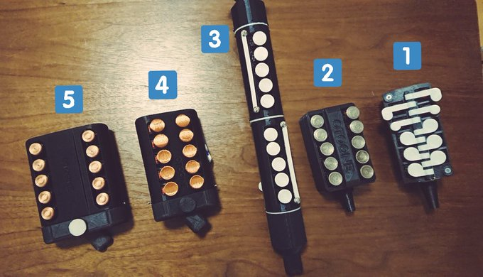

OTOONE_DEV is OTOONE developer
OTOONE の由来は OTO(音) と TONE(音色) を合わせた造語です。
読み方は「オトーン」です。私が子を持つ「お父ん」でもあります…。
Twitter
情報を随時公開予定です。
AFUUE (ウインドシンセサイザー)
超小型のウインドシンセサイザー(電子管楽器)です。
３オクターブ半の広い音域と、息による音の強弱で、感情をこめた演奏表現が可能です。
詳細は
こちら

右から１号機、２号機、３号機、４号機、５号機(最新版)です。
１号機は、キーが中央の軸を中心に倒れる仕組みです。加工が大変でした。
3Dプリンタも不慣れで本体に隙間があります。Arduino Nano が中に入っています。
２号機は、キーが独立し、本体の隙間も改善。こちらも Arduino Nano が入ってます。
完成度が上がりましたが、組み立てはキー１つずつに線材をハンダ付けするので大変でした。
３号機は、デザインを管楽器に近づけるテストです。こちらも Arduino Nano が入ってます。
キー１つずつに線材をハンダ付けする大変さは変わらず、本体が複数パーツのため組み立ては最高難度です。
４号機は、プリント基板になり、Arduino をやめ AVR マイコンを直に使うようになりました。
組み立ても容易になり、なんとか量産できそうなレベルに達しました。
５号機は、ESP32 モジュールと秋月電子さんの AE-8012 アンプを使用することで音質と音量が大幅に改善しました。
同じものを複数台作ってみる予定です。
さらに、Bluetooth 経由で MIDI 出力できないかも検討中です。
５号機の内部基板は１枚です。ここに ESP32 モジュールやスイッチ、気圧センサーなどを実装して、3D プリンターで作った筐体に入れるだけで完成です。
ヤマハWX5 とのサイズ比較。超小型です。
OTOONE (Android楽器アプリ)
画面をスクロールする事なく、４オクターブで和音が演奏できる、おそらく唯一の Android アプリです。
タッチしながらスライドする事でポルタメントもできます。
色は各スケールを表しており、D メジャーで演奏したい時は黄色いラインを見ればＯＫの簡単仕様。
GooglePlay
プレイ動画